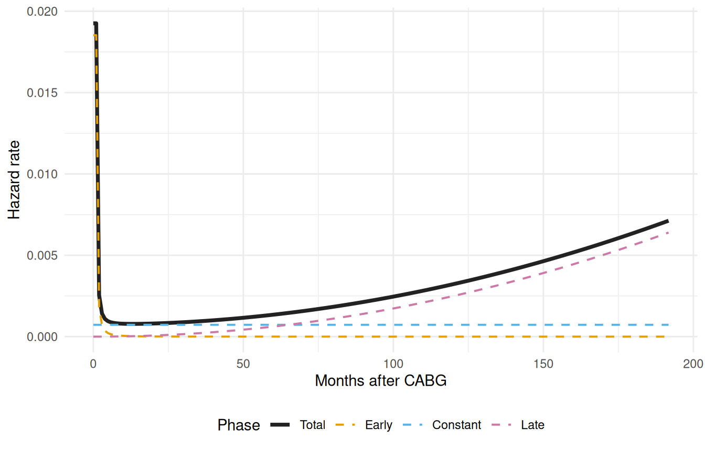
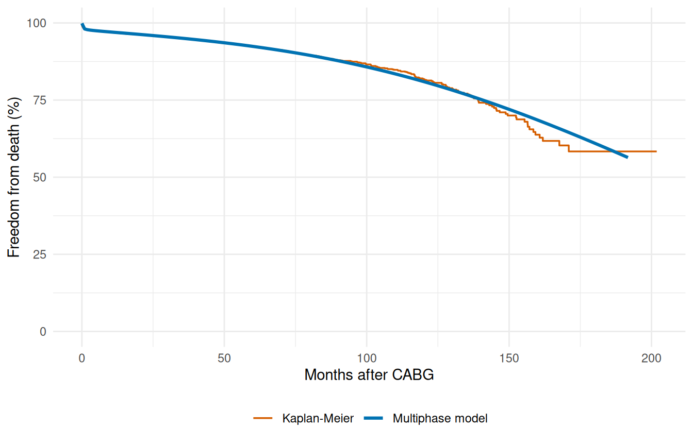

library(TemporalHazard)
library(survival)
set.seed(1001)
n <- 180
dat <- data.frame(
time = rexp(n, rate = 0.35) + 0.05,
status = rbinom(n, size = 1, prob = 0.6),
age = rnorm(n, mean = 62, sd = 11),
nyha = sample(1:4, n, replace = TRUE),
shock = rbinom(n, size = 1, prob = 0.18)
)
fit <- TemporalHazard::hazard(
Surv(time, status) ~ age + nyha + shock,
data = dat,
theta = c(mu = 0.25, nu = 1.10, beta1 = 0, beta2 = 0, beta3 = 0),
dist = "weibull",
fit = TRUE,
control = list(maxit = 300)
)
summary(fit)
#> hazard model summary
#> observations: 180
#> predictors: 3
#> dist: weibull
#> engine: native-r-m2
#> converged: TRUE
#> log-lik: -293.553
#> evaluations: fn=36, gr=8
#>
#> Coefficients:
#> estimate std_error z_stat p_value
#> mu 0.121860518 0.062260593 1.95726561 5.031625e-02
#> nu 1.143730632 0.084302528 13.56697905 6.285984e-42
#> beta1 0.001716551 0.008807986 0.19488579 8.454824e-01
#> beta2 0.156208724 0.090597558 1.72420459 8.467092e-02
#> beta3 0.017352702 0.362918393 0.04781434 9.618642e-01Getting Started with TemporalHazard
Build, fit, and predict with temporal parametric hazard models
Source:vignettes/getting-started.qmd
TemporalHazard fits parametric hazard models to time-to-event data. If you’ve worked with survival::coxph() or Kaplan-Meier curves before you already have most of the vocabulary; this is a quick refresh of the bits that matter for what follows.
A hazard is the instantaneous risk of the event at time , given the subject has survived until . A Kaplan-Meier curve reflects it implicitly: KM gives you survival probabilities, and the rate at which those probabilities drop is (minus) the hazard. A parametric hazard model writes the hazard as a smooth function of with a small number of parameters, plus covariate effects. The payoff over nonparametric KM is a smooth curve you can extrapolate, patient-specific risk predictions, and the ability to compare fitted hazard shapes across groups or models.
This vignette walks the minimal workflow. We start with a single-distribution Weibull fit on simulated data — fit, summary, predict — then move to the multiphase fit on CABGKUL, the canonical three-phase cardiac-surgery example.
A first Weibull fit
The simulated data below has 180 patients with three plausible risk covariates — age, NYHA functional class, and cardiogenic shock. We fit a single Weibull hazard: a scale parameter (mu) and a shape exponent (nu) that lets the hazard accelerate when nu > 1, decelerate when nu < 1, or stay flat at nu = 1. The Weibull is the natural starting point for a single-distribution fit because it covers all three monotone shapes with just two parameters.
The hazard() interface takes a survival formula (Surv(time, status) on the left, covariates on the right), a starting-value vector (theta), and a distribution name. Passing fit = TRUE runs the optimizer and returns a fitted model; passing fit = FALSE returns the model specification without fitting, which is useful for sanity-checking the formula and starting values before committing to the optimizer.
Prediction workflow
A fitted hazard model lets you score new patients without refitting. The predict() method takes a newdata frame and a type argument that selects which quantity to compute:
-
"linear_predictor"— the covariate-driven log-hazard-ratio for each row, . -
"hazard"— the hazard multiplier, . -
"survival"— the probability of surviving past each row’stime, . -
"cumulative_hazard"— the integrated hazard up to each row’stime, .
The three rows below are made-up patients spanning the covariate range in the training data: a younger, low-NYHA, no-shock patient at an early time; a middle case at the median; and an older, high-NYHA, shock patient further out. We compute all four prediction types for each.
new_patients <- data.frame(
time = c(0.5, 1.5, 3.0),
age = c(50, 65, 75),
nyha = c(1, 3, 4),
shock = c(0, 0, 1)
)
pred_input <- new_patients
new_patients$linear_predictor <- predict(fit, newdata = pred_input, type = "linear_predictor")
new_patients$hazard_multiplier <- predict(fit, newdata = pred_input, type = "hazard")
new_patients$survival <- predict(fit, newdata = pred_input, type = "survival")
new_patients$cumulative_hazard <- predict(fit, newdata = pred_input, type = "cumulative_hazard")
new_patients
#> time age nyha shock linear_predictor hazard_multiplier survival
#> 1 0.5 50 1 0 0.2420363 1.273840 0.9494097
#> 2 1.5 65 3 0 0.5802020 1.786399 0.7743185
#> 3 3.0 75 4 1 0.7709289 2.161774 0.5046535
#> cumulative_hazard
#> 1 0.05191482
#> 2 0.25577202
#> 3 0.68388317Visualizing predicted survival
The summary table and the patient-level scores tell us the fit converged and what it predicts, but not whether the predicted shape matches the data. For that we plot the model. Below we build a smooth survival curve over a fine time grid for a median-profile patient and overlay the Kaplan-Meier nonparametric estimate from the raw data on the same axes. If the parametric curve hugs the KM step function the Weibull shape is honest to the data; visible drift in either direction flags a model the optimizer fit happily but that doesn’t actually describe the cohort.
library(ggplot2)
# Parametric curve on a fine grid
t_grid <- seq(0.05, max(dat$time), length.out = 80)
curve_df <- data.frame(
time = t_grid,
age = median(dat$age),
nyha = 2,
shock = 0
)
curve_df$survival <- predict(fit, newdata = curve_df, type = "survival") * 100
# Kaplan-Meier empirical overlay
km <- survival::survfit(survival::Surv(time, status) ~ 1, data = dat)
km_df <- data.frame(time = km$time, survival = km$surv * 100)
ggplot() +
geom_step(data = km_df, aes(time, survival, colour = "Kaplan-Meier")) +
geom_line(data = curve_df, aes(time, survival,
colour = "Parametric (Weibull)")) +
scale_colour_manual(
values = c("Parametric (Weibull)" = "#0072B2",
"Kaplan-Meier" = "#D55E00")
) +
scale_y_continuous(limits = c(0, 100)) +
labs(x = "Months after surgery", y = "Freedom from death (%)",
colour = NULL) +
theme_minimal() +
theme(legend.position = "bottom")
Multiphase models
The Weibull fit above describes the hazard with one smooth, monotone curve — it can rise, fall, or stay flat over time, but it cannot change direction. That’s fine for some processes (light bulbs failing, parts wearing out). It breaks down quickly for clinical data.
Consider CABG (coronary artery bypass graft) surgery. In the days right after the operation the risk of death is at its highest: the patient is in the ICU, exposed to operative complications, infections, bleeding. If they survive that window the risk drops to a low, roughly flat background rate: they recover, go home, live their lives. Years later the risk rises again as the grafts begin to deteriorate and the cohort ages. Three distinct regimes, each with its own clinical mechanism.
No single Weibull (or log-normal, or any other monotone distribution) can fit all three at once. The optimizer would have to compromise: picking a shape that’s mediocre everywhere instead of right in any one regime. You’d predict too few early deaths, the wrong slope in the middle, and too few late deaths.
The multiphase decomposition is the workaround. Instead of asking one distribution to do everything, we describe the total cumulative hazard as a sum of phase-specific contributions, each with its own temporal shape:
Each is a phase-specific temporal shape: a unit-scaled curve that says how phase ’s hazard accumulates over time. Each is the phase-specific scale: how much cumulative hazard belongs to phase , possibly modulated by covariates. The phases overlap and their hazards add. There’s no switching, no thresholds, no piecewise joins; at any time the instantaneous hazard is the sum of the per-phase contributions , where .
Why multiple phases?
Because the number of phases is the modeling lever that lets you match the data’s actual structure. Some processes are well-described by two phases (early failure + steady-state). Most cardiac-surgery cohorts need three: early operative risk + constant background + late deterioration. A small handful — acute aortic dissection is the classic — need four (operative + subacute + constant + late). The framework is general; the count is a modeling choice driven by clinical knowledge and the shape of the Kaplan-Meier cumulative hazard curve.
For the CABGKUL fit below we use three phases. That’s not a property of the package; it’s a property of this dataset.
Each phase is specified with hzr_phase(). The first argument picks the shape function: "cdf" for a saturating curve bounded between 0 and 1 (the SAS “early” / G1 shape), "constant" for a flat hazard plateau (SAS “G2”), "g3" for the polynomial late-rising shape from the SAS “late” library. Remaining arguments set the shape’s free parameters, or fix them with fixed = "shapes". The Phase types section below has the full menu.
For this fit we use the textbook three-phase decomposition: a saturating early peak, a constant background, and a polynomial late rise. We fix the shapes so we can compare the fitted scales against the published reference; in your own work you would usually estimate them.
# CABGKUL is the benchmark dataset for 3-phase decomposition (n = 5,880)
data(cabgkul)
fit_mp <- hazard(
Surv(int_dead, dead) ~ 1,
data = cabgkul,
dist = "multiphase",
phases = list(
early = hzr_phase("cdf", t_half = 0.2, nu = 1, m = 1,
fixed = "shapes"),
constant = hzr_phase("constant"),
late = hzr_phase("g3", tau = 1, gamma = 3, alpha = 1, eta = 1,
fixed = "shapes")
),
fit = TRUE,
control = list(n_starts = 5, maxit = 1000)
)
summary(fit_mp)
#> Multiphase hazard model (3 phases)
#> observations: 5880
#> predictors: 0
#> dist: multiphase
#> phase 1: early - cdf (early risk)
#> phase 2: constant - constant (flat rate)
#> phase 3: late - g3 (late risk)
#> engine: native-r-m2
#> converged: TRUE
#> log-lik: -3740.52
#> evaluations: fn=5, gr=1
#>
#> Coefficients (internal scale):
#>
#> Phase: early (cdf)
#> estimate std_error z_stat p_value
#> log_mu -3.779538 0.0835127 -45.25704 0
#> log_t_half -1.609438 NA NA NA
#> nu 1.000000 NA NA NA
#> m 1.000000 NA NA NA
#>
#> Phase: constant (constant)
#> estimate std_error z_stat p_value
#> log_mu -7.225804 0.08275159 -87.31921 0
#>
#> Phase: late (g3)
#> estimate std_error z_stat p_value
#> log_mu -16.65781 NA NA NA
#> log_tau 0.00000 NA NA NA
#> gamma 3.00000 NA NA NA
#> alpha 1.00000 NA NA NA
#> eta 1.00000 NA NA NAThe summary marks most rows NA in the std_error, z_stat, and p_value columns. Two mechanisms produce these, both deliberate:
- The seven shape parameters carry
fixed = "shapes"and act as user-supplied constants (t_half,nu,mon the early phase;tau,gamma,alpha,etaon the late phase). The optimizer never moves them, so they have no estimated variance to report. - One of the three
log_muscale parameters is alsoNA. By default the multiphase optimizer enforces Conservation of Events (Turner’s theorem): one phase’slog_muis solved analytically at every iteration so that total predicted events equal total observed. That phase is not a free parameter at the MLE, so its inverse-Hessian variance is degenerate, and the table marks itNArather than print a misleading number. Passcontrol = list(conserve = FALSE)to disable Conservation of Events and estimate all three scale parameters freely.
The two remaining log_mu rows are the optimizer-estimated free parameters; their Wald statistics reflect the two-parameter fit dimension that remains after the Conservation-of-Events constraint absorbs the third log_mu.
Decomposed hazard visualization
The MLE numbers in the summary tell us what the model committed to, but not how the three phases fit together over time. For that we need the per-phase contributions. The decompose = TRUE argument on predict() returns one cumulative-hazard column per phase plus the total; we numerically differentiate each one (a coarse first-difference is fine here, since we just want to look) to get an instantaneous hazard rate.
The plot that follows is the diagnostic that matters: it shows whether the model carved up the timeline the way we expected. The early phase should dominate near and die off. The constant phase should be a flat floor. The late phase should be near zero early and rise after a lag. If any of those shapes looks wrong, the fix is in the starting values or in the choice of shape function, not in the data.
t_grid <- seq(0.01, max(cabgkul$int_dead) * 0.95, length.out = 200)
nd <- data.frame(time = t_grid)
# decompose = TRUE returns per-phase cumulative hazard columns
decomp <- predict(fit_mp, newdata = nd, type = "cumulative_hazard",
decompose = TRUE)
# Numerical differentiation: h(t) ≈ ΔH(t) / Δt
num_hazard <- function(cumhaz, time) {
dt <- diff(time)
dH <- diff(cumhaz)
c(dH[1] / dt[1], dH / dt)
}
h_long <- rbind(
data.frame(time = t_grid, hazard = num_hazard(decomp$early, t_grid),
Phase = "Early"),
data.frame(time = t_grid, hazard = num_hazard(decomp$constant, t_grid),
Phase = "Constant"),
data.frame(time = t_grid, hazard = num_hazard(decomp$late, t_grid),
Phase = "Late"),
data.frame(time = t_grid, hazard = num_hazard(decomp$total, t_grid),
Phase = "Total")
)
h_long$Phase <- factor(h_long$Phase,
levels = c("Total", "Early", "Constant", "Late"))
ggplot(h_long, aes(time, hazard, colour = Phase, linetype = Phase)) +
geom_line(aes(linewidth = Phase)) +
scale_colour_manual(values = c(Total = "#222222", Early = "#E69F00",
Constant = "#56B4E9", Late = "#CC79A7")) +
scale_linetype_manual(values = c(Total = "solid", Early = "dashed",
Constant = "dashed", Late = "dashed")) +
scale_linewidth_manual(values = c(Total = 1.3, Early = 0.7,
Constant = 0.7, Late = 0.7)) +
labs(x = "Months after CABG", y = "Hazard rate",
colour = "Phase", linetype = "Phase", linewidth = "Phase") +
theme_minimal() +
theme(legend.position = "bottom")
Multiphase survival with Kaplan-Meier overlay
The decomposition plot tells us the model has the right shape; the overlay plot tells us it has the right level. Plotting the parametric survival curve against the Kaplan-Meier estimate on the same axis is the single most useful diagnostic for a hazard fit. KM is the gold-standard nonparametric reference; if the parametric curve drifts away from it, something is wrong with the model that more iterations won’t fix.
surv_df <- data.frame(
time = t_grid,
survival = predict(fit_mp, newdata = nd, type = "survival") * 100
)
km <- survfit(Surv(int_dead, dead) ~ 1, data = cabgkul)
km_df <- data.frame(time = km$time, survival = km$surv * 100)
ggplot() +
geom_step(data = km_df, aes(time, survival, colour = "Kaplan-Meier"),
linewidth = 0.6) +
geom_line(data = surv_df, aes(time, survival, colour = "Multiphase model"),
linewidth = 1.1) +
scale_colour_manual(
values = c("Multiphase model" = "#0072B2", "Kaplan-Meier" = "#D55E00")
) +
scale_y_continuous(limits = c(0, 100)) +
labs(x = "Months after CABG", y = "Freedom from death (%)",
colour = NULL) +
theme_minimal() +
theme(legend.position = "bottom")
Phase types
Picking the right phase shape is the single biggest modeling decision in a multiphase fit. The package ships the canonical shapes from the SAS C HAZARD library:
-
"cdf"— a saturating curve , parameterized byt_half(the time at which ),nu(a time exponent), andm(a shape exponent). This is the SAS “early” or G1 shape. Use it for the early phase, or for any phase whose accumulated hazard saturates rather than growing without bound. -
"constant"— . The phase’s hazard rate is flat; there are no shape parameters to estimate, only the scale . This is the SAS G2 shape. Use it for a background plateau. -
"g3"— the SAS “late” shape, parameterized bytau(a time-scale),gamma(a time exponent),alpha(a shape parameter; gives an exponential limit), andeta(an outer exponent). Use it for a late phase that is near-zero early and accelerates over time — graft deterioration over years is the archetype.
See ?hzr_phase for the additional "hazard" shape and the full parameterization of each.
In practice you choose phase shapes by looking at the Kaplan-Meier cumulative hazard plot, identifying which regimes are present, and matching each regime to the shape family whose behavior fits. Then you fit, look at the decomposition plot, and adjust starting values or fix shapes if a phase doesn’t land where you expected.
The "g3" type uses the four-parameter G3 decomposition from the original C/SAS HAZARD program, providing unbounded power-law growth for late-phase hazards. See vignette("mf-mathematical-foundations") for the full mathematical treatment.
Numerical helpers
The package ships a small set of numerical helpers used internally to keep the likelihood evaluations stable across the wide range of arguments an optimizer encounters. They’re exported so you can reach for them in custom code or when debugging a fit.
The most common one is hzr_log1pexp(x), which computes in a numerically stable way. The naive log(1 + exp(x)) overflows once exceeds about 700 (because exp(x) itself overflows); the helper switches to the asymptotic for large , which is exact to floating-point precision. The package uses it inside every log-likelihood expression that involves a log-survival term, so the same evaluation can run on and without producing Inf or NaN.
TemporalHazard::hzr_log1pexp(c(-2, 0, 2))
#> [1] 0.1269280 0.6931472 2.1269280